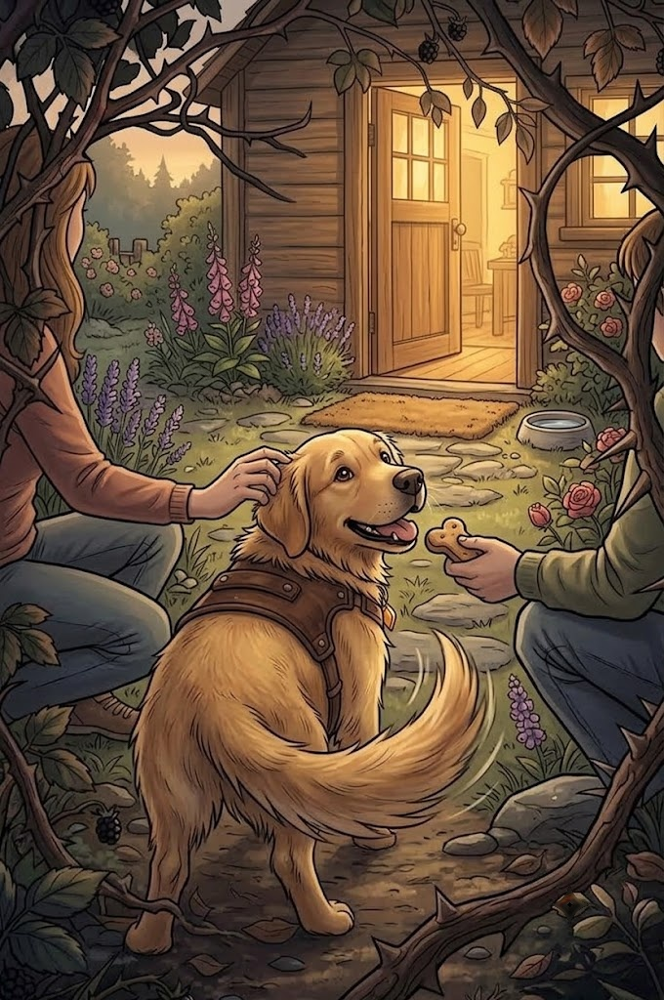

3/3
Camino Final: Un Paseo Silencioso
🔊 Narración:
Nami pisa con tanta suavidad sobre sus patitas que ni una sola hoja cruje. El tejón solo se da la vuelta y sigue roncando. Al salir del túnel de arbustos, reconoce el jardín.
Su familia abre la puerta de inmediato, recibiéndola con caricias detrás de las orejas y su premio favorito. Nami mueve la cola de felicidad, por fin está a salvo y calientita.
♦ ───── ♦
¡Felicidades!
Gracias a ti, Nami volvió a casa.